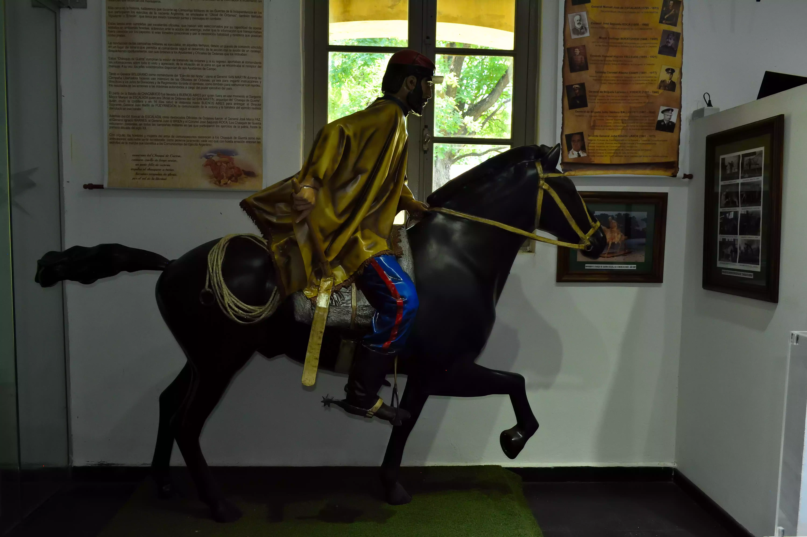
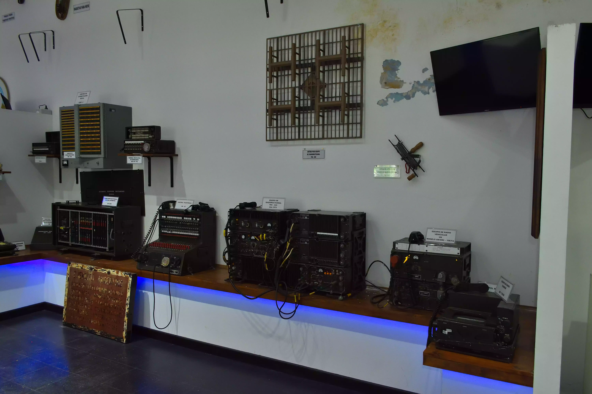

Sala de Comunicaciones
La Sala Histórica del Arma de Comunicaciones del Ejército Argentino busca rendir homenaje y difundir el
legado de quienes, a través del tiempo, garantizaron el flujo de información en los momentos más
decisivos de nuestra historia militar. A través de objetos, documentos, maquetas y recursos gráficos,
esta exposición permite conocer el desarrollo, la diversidad y la importancia del Arma en la estructura
y operatividad del Ejército.
1. Exposición sobre el Arma de Comunicaciones
Esta sección aborda el origen y evolución del Arma de Comunicaciones, desde sus inicios hasta su
papel fundamental en el Ejército actual. A lo largo del tiempo, la tecnología aplicada a las
comunicaciones ha sido determinante para el éxito de las operaciones militares. Desde los
antiguos métodos de transmisión de mensajes hasta las modernas redes digitales, la exposición
muestra cómo las comunicaciones han acompañado cada etapa del desarrollo institucional del
Ejército Argentino. Asimismo, se destaca la diversidad de tareas y medios utilizados,
evidenciando la constante innovación y adaptabilidad de esta arma esencial.



2. Uniformes
Se exhiben tanto uniformes actuales como uniformes históricos del personal de Comunicaciones,
acompañados de los distintivos que identifican al Arma. Esta muestra permite observar la evolución en la
vestimenta militar, sus adaptaciones a diferentes entornos y épocas, y el simbolismo de cada elemento
que conforma la identidad del comunicador militar.
3. Infografías
Mediante paneles gráficos e ilustraciones interactivas, se presenta información clave para
comprender el desarrollo de las comunicaciones en contexto histórico. Se incluyen:
Los caminos del chasqui, como antecedente precolombino del sistema de mensajería.
Precursores y referentes del Arma de Comunicaciones, que marcaron hitos en su historia.
Mapas de las líneas telegráficas y de las redes de palomas mensajeras, que funcionaron como
medios vitales de enlace en diferentes épocas.
Representaciones del Código Morse y el Alfabeto Militar Internacional, herramientas
fundamentales para la transmisión codificada de mensajes.
4. Objetos de Comunicaciones
Una colección de elementos utilizados por el personal del Arma permite visualizar la evolución
tecnológica aplicada al campo militar. Entre los objetos se encuentran:
Teléfonos de campaña, radios y radiomochilas de distintas generaciones.
Computadoras y generadores eléctricos, reflejo del avance hacia la era digital.
Accesorios de vestimenta específicos para operaciones de comunicación, que garantizan la funcionalidad
en entornos exigentes.
5.Maquetas
Dos representaciones en escala complementan la exposición:
Una maqueta de la Casa del Gobernador de las Islas Malvinas, escenario simbólico que remite a uno de los
momentos históricos más relevantes para la Nación.
Un modelo de soldados del Arma de Comunicaciones, que permite apreciar la composición y equipamiento del
personal en operación.
6. Conmemoraciones
Finalmente, la sala rinde tributo a los caídos a través de una lápida conmemorativa al "Soldado sólo
conocido por Dios", símbolo del sacrificio anónimo y eterno de quienes dieron su vida por la Patria.
Este espacio invita a la reflexión y al reconocimiento de quienes, desde las sombras del silencio,
garantizaron que la voz del Ejército nunca dejara de oírse.
Esta sala no sólo es un recorrido por la historia de las comunicaciones militares, sino también un homenaje a los hombres y mujeres que, con vocación y compromiso, hicieron posible que la información fluyera con precisión en cada misión, asegurando el cumplimiento de los objetivos estratégicos del Ejército Argentino.
Esta sala no sólo es un recorrido por la historia de las comunicaciones militares, sino también un homenaje a los hombres y mujeres que, con vocación y compromiso, hicieron posible que la información fluyera con precisión en cada misión, asegurando el cumplimiento de los objetivos estratégicos del Ejército Argentino.